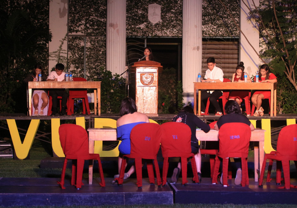

Yieel
Hello.
I am Oriel.
Projects
Below are Yieel's projects all over the years during his undergraduate study
Arduino Timer
An arduino base timer that can be used as an alarm clock. There is a start button and a stop button. User can set the time the timer would alarm. This project is for the microcontroller subject
Arduino Mini Garage
A mini stereo garage using Arduino. Sensing toy cars with Infrared sensors. L298n motor driver for controlling the motors of the garage. Motors to control the platforms to go up or down. Touchscreen to control all the Stereo garage features
Python Snake Game
A snake game developed using Python and Numpy library. The snake, movements and design is made out of from python, the background is created from the google. Numpy is use to randomize the food for the snake
About
Here are some information about Yieel:
CShess
Played multiple tournaments during high school and senior high school. Won five out of 7 championship games for high school and senior high school intramural games. Peaked chess.com rating of 1700.
Parliamentary Debate
Joined multiple debate tournaments during senior high school. Debated with debaters from different universities and colleges in Negros Oriental. Participated on the most prestigious debate tournament in the visayas region, Visayan Universities Debate Championships. Mostly joined Asian-Parliamentary debate format.
Quality Assurance
Worked as quality assurance MOD for Scale.ai for 1 year. Improve overall accuracy of outputs from 94 percent to 98-100 percent. Hit weekly quota for reviews of tasker work weekly. Provided list of low accuracy taskers for banning purposes
Contact
Contact Yieel through different social media accounts